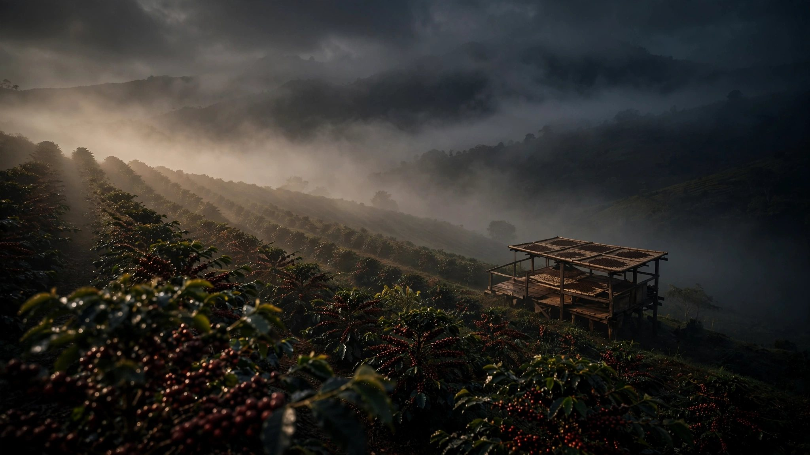
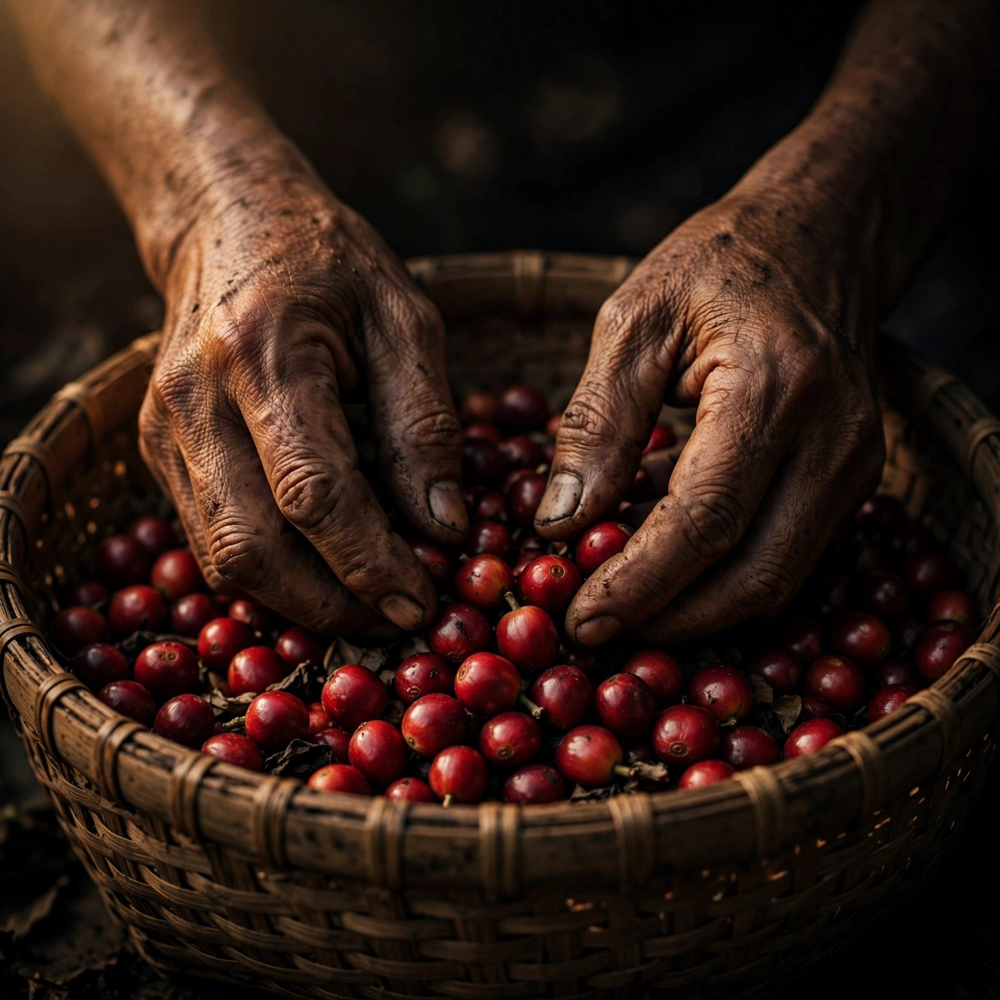
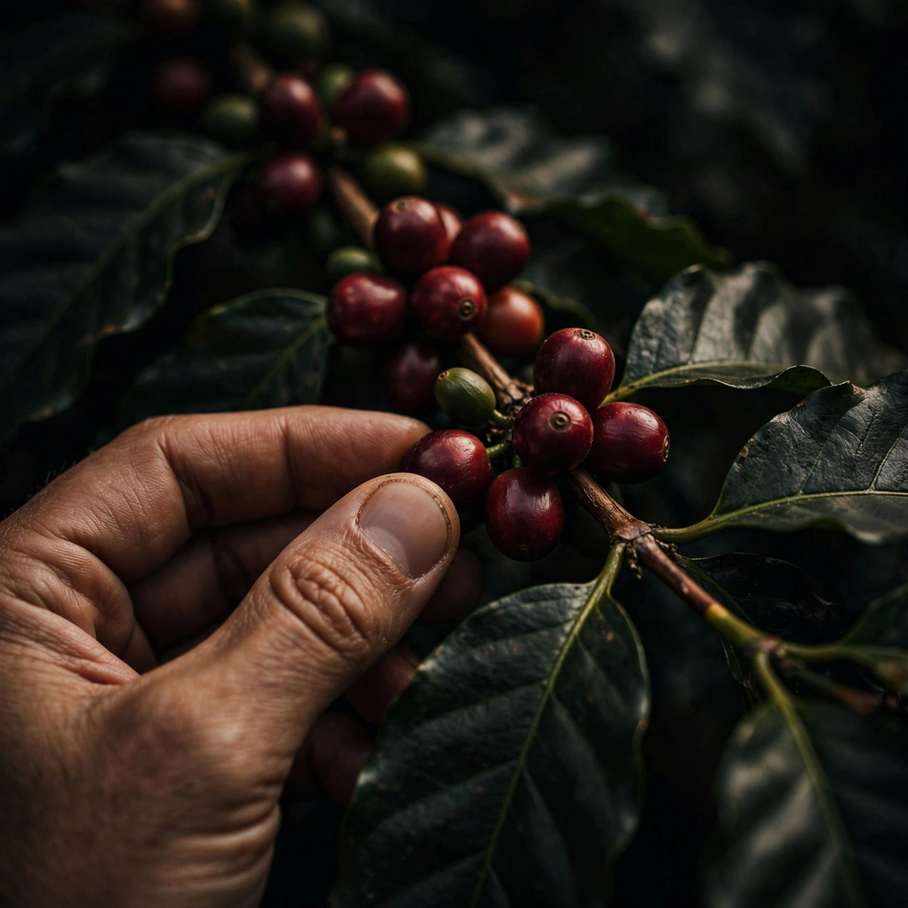
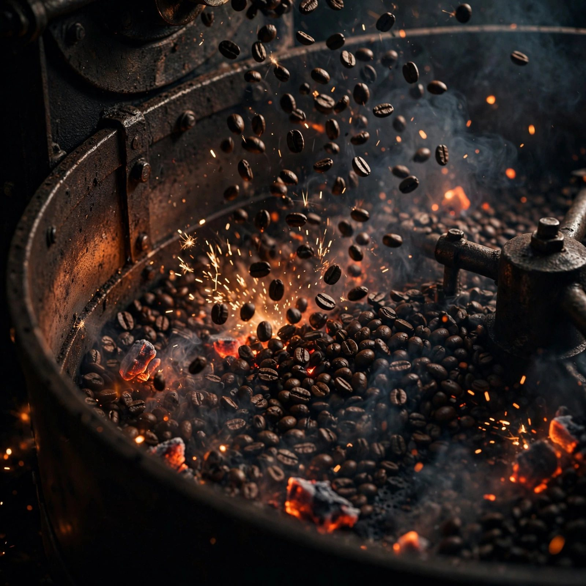
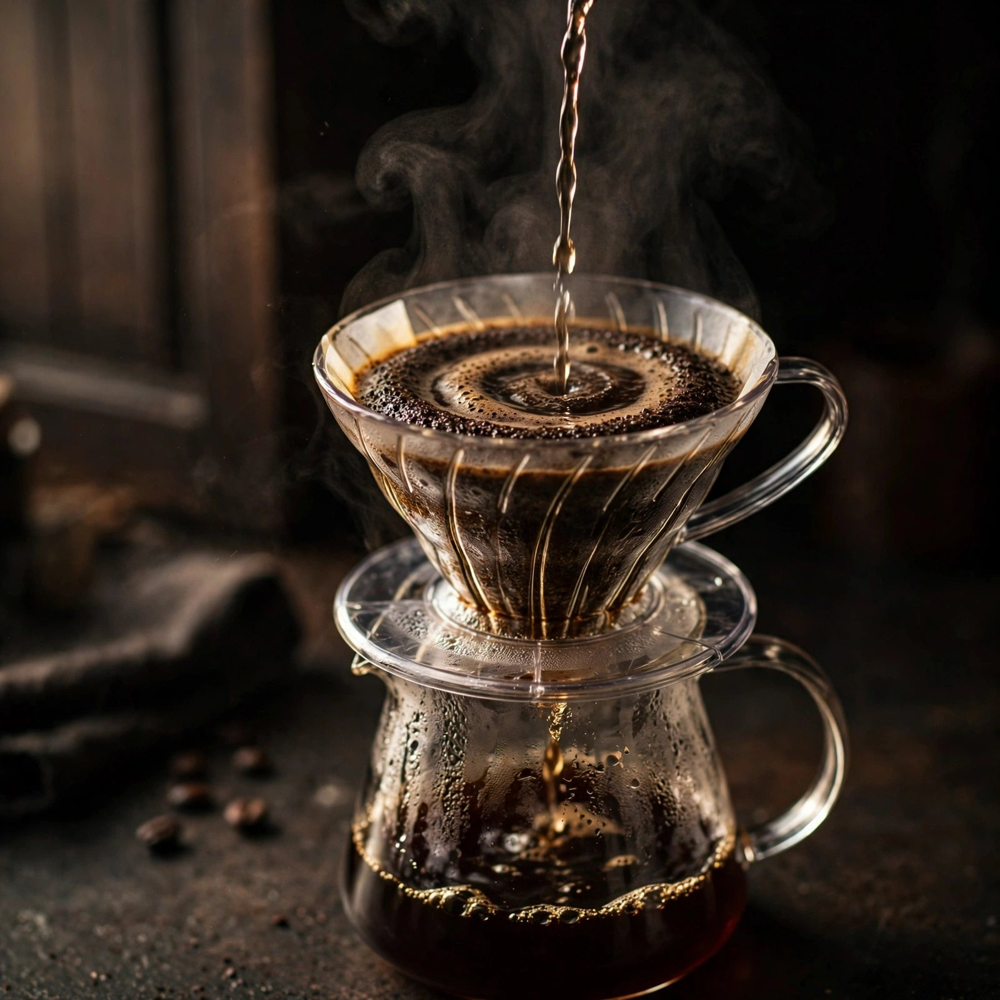
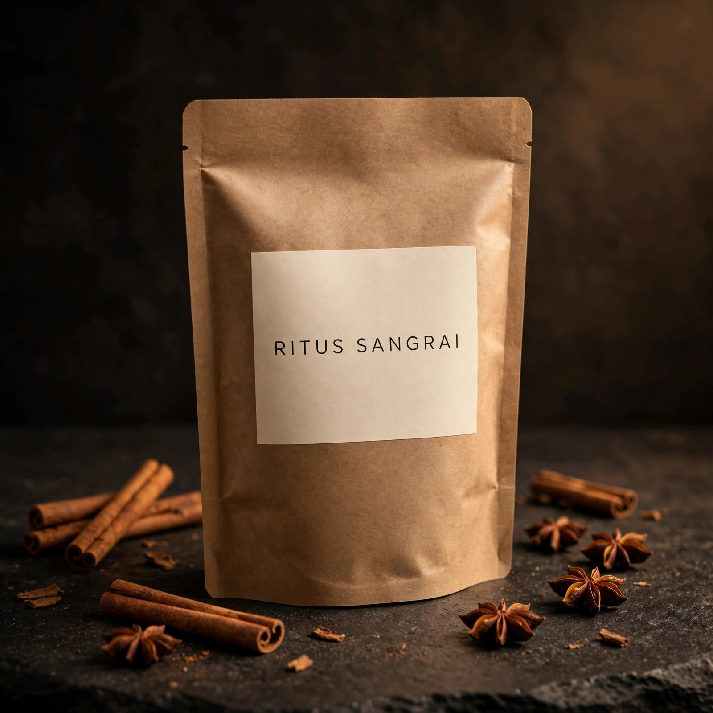
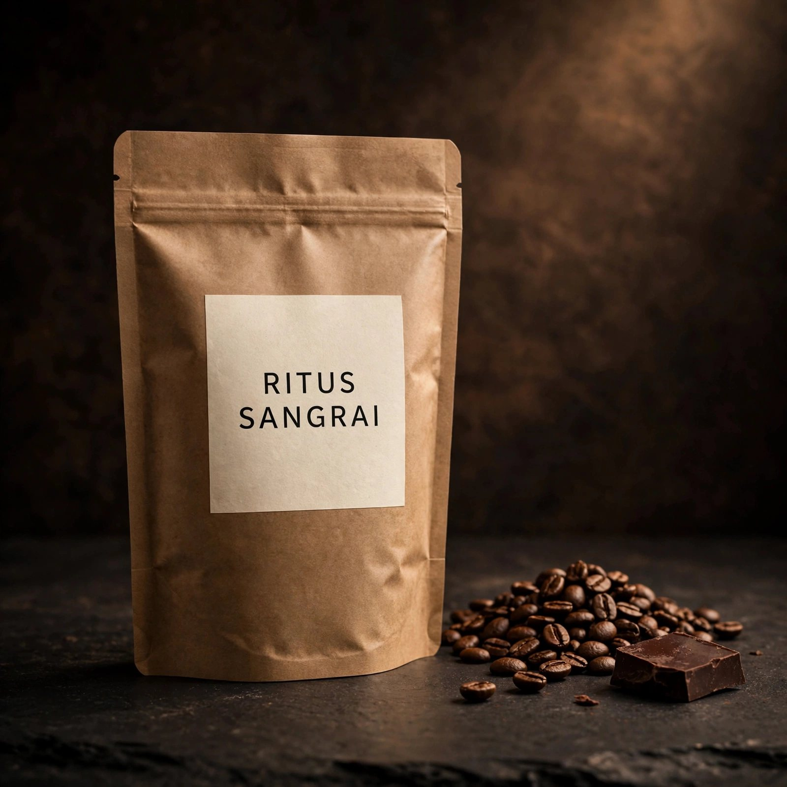
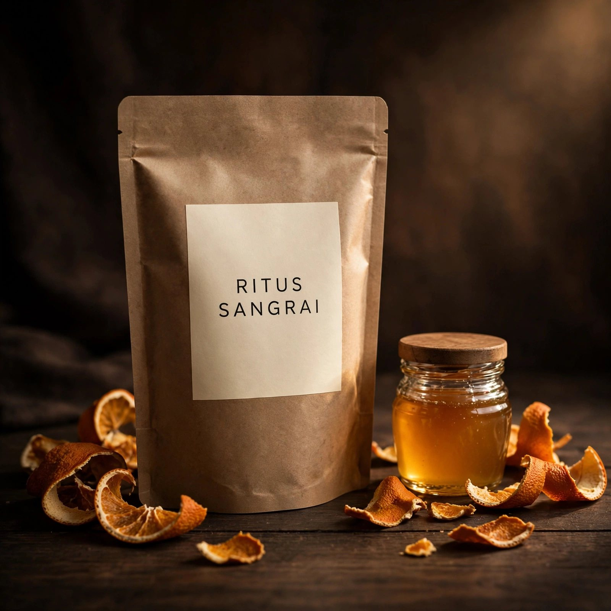
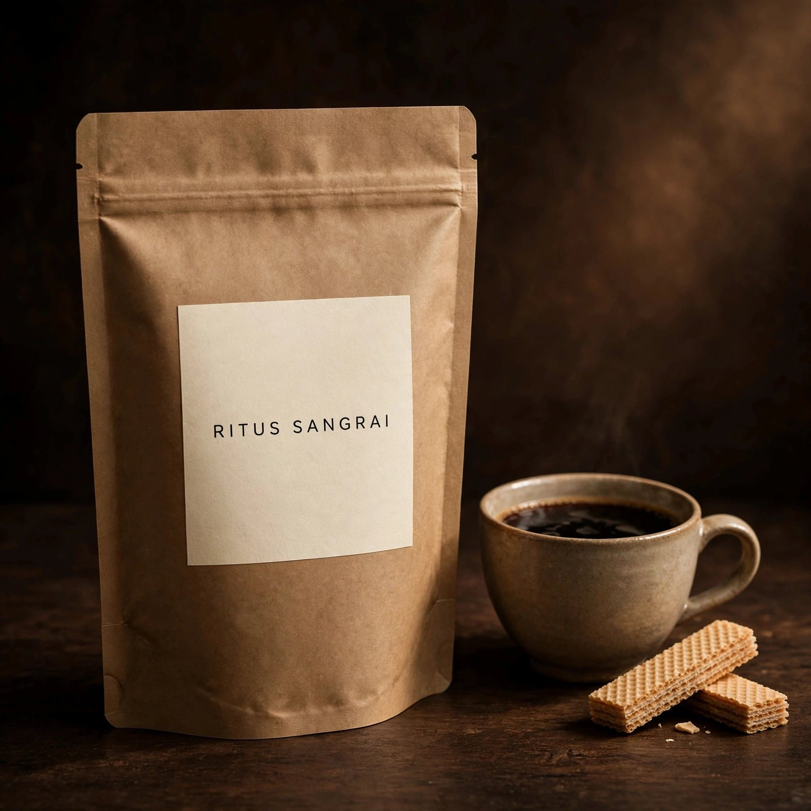

Kaldi dan kambingnya
Seorang gembala di Ethiopia menemukan buah merah yang membuat kambingnya begadang. Ia mencobanya, dan malam pun tidak lagi sepi.

Kami meracik biji dari kebun kecil Nusantara — dipanen tangan, disangrai per batch, diseduh tanpa tergesa.
Tahun 2019, kami kembali ke desa di kaki Gunung Agung membawa kardus biji toraja curahan dari kerabat. Tidak ada mesin sangrai — hanya wajan besi, kayu bakar, dan telapak tangan yang belajar mendengar letupan pertama.
Tahun kedua kami membeli drum sangrai bekas cat. Tahun ketiga kami berhenti menjual ke tetangga dan mulai menjual ke seluruh Indonesia. Yang tidak berubah: setiap batch tetap 12 kilogram, tetap dicatat dengan tangan, tetap dibuang kalau tidak lolos cicip.

Seorang gembala di Ethiopia menemukan buah merah yang membuat kambingnya begadang. Ia mencobanya, dan malam pun tidak lagi sepi.
Kopi dibudidayakan di Yaman, diseduh dalam ritual malam dzikir. Dari kedai kopi Aden, kopi dikenal sebagai "anggur Arab".
Kopi tiba di Turki Ottoman dan membuka kedai kopi pertama di luar dunia Arab. Kafe jadi ruang debat, sastra, dan catur.
Kedai kopi pertama Eropa lahir. Pedagang, penulis, dan ilmuwan berkumpul — "panggung intelektual" baru dunia.
Bibit kopi dari Malabar, India ditanam di Jawa Barat. Dari sinilah Nusantara masuk ke dalam sejarah kopi dunia.
Ritus berpindah dari istana ke pabrik ke dapur. Kami mengembalikannya ke ukuran yang bisa dijaga: 12 kilogram, tangan yang sama.

Selective picking. Hanya ceri matang penuh yang masuk keranjang, supaya gula di dalam daging buah sudah sempurna sebelum kering.

First crack jadi patokan, bukan termometer. Setiap batch dicicip dingin keesokan harinya — kalau pahit berasap, batch dibuang.

Rasio 1:15, blooming 30 detik. Bukan resep rahasia — hanya kesabaran yang jarang dilakukan orang di rumah.

Full natural. Badam, gula aren, tuba tipis di akhir. Berat, jadi teman pagi buta.

Wine process. Cokelat hitam, plum, rempah kering. Kekar dan panjang di lidah.

Honey process. Jeruk manis, madu, kayu manis. Paling ramah untuk pemula.

Washed heirloom. Karamel, kacang mede, susu. Homage ke bibit pertama Jawa.
"Saya kira 'brew di rumah enak' itu gimmick. Setelah pakai Flores Bajawa, mesin kantor saya jarang dipakai."
"Batch-nya ditulis tangan, tanggal sangrainya jelas. Sepele, tapi bikin percaya."
"Preanger 1696 itu kopi langganan ayah saya waktu di kantor. Rasanya memang beda yang dijual sekarang."
Semua biji disangrai setelah pesanan masuk — 2–3 hari sampai ke pintu kamu.